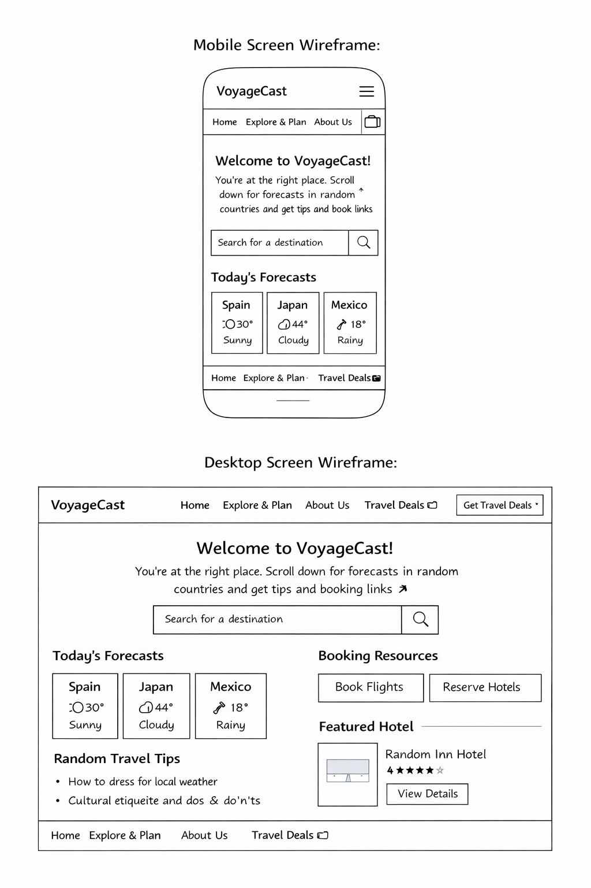

Site Name
VoyageCast
VoyageCast combines “Voyage” (travel and exploration) with “Cast” (forecast), reflecting the website’s purpose of delivering travel-focused weather insights.
Optional Domain: voyagecast.travel
Site Purpose
VoyageCast provides travelers with accurate weather information and essential travel resources for destinations worldwide, helping users prepare effectively before traveling.
Scenarios
- What will the weather be like in Tokyo over the next five days?
- Where can I find trusted booking links after checking my destination’s climate?
Color Scheme
Primary – Deep Blue (#1f3c88): Used for headings, navigation, and structural elements.
Secondary – Warm Sand (#f4a261): Used for buttons, highlights, and accents.
Typography
- Open Sans: Headings and titles
- Playwrite New Zealand: Body text and descriptive content
Wireframe
